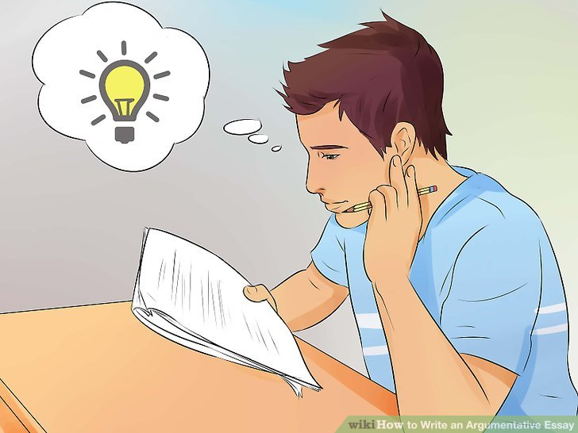
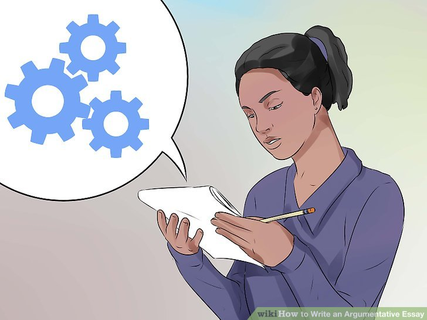
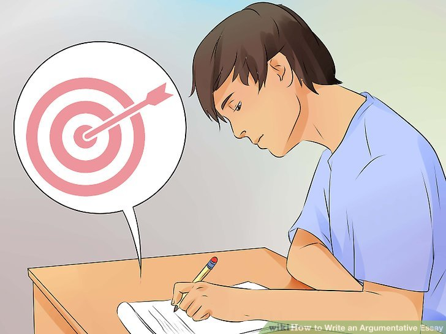
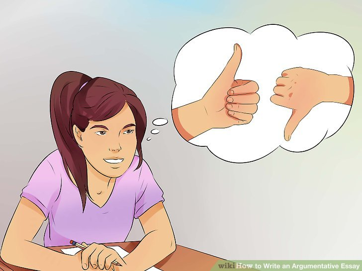
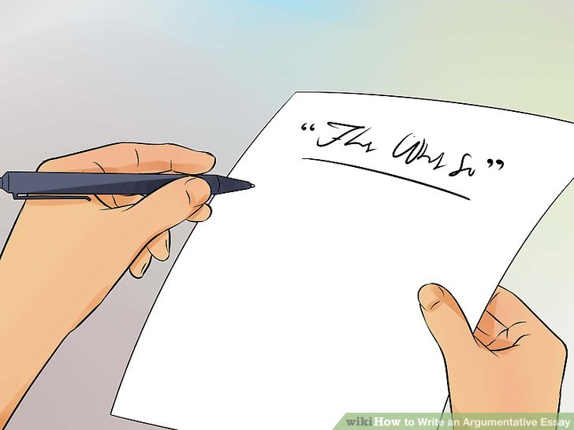

How to write an essay
Types of An Essay :

1.How to write an argumentative essay
An argumentative essay expresses an extended argument for a particular thesis statement. The author takes a clearly defined stance on their subject and builds up an evidence-based case for it.
Argumentative essays are by far the most common type of essay to write at university.
When do you write an argumentative essay?
You might be assigned an argumentative essay as a writing exercise in high school or in a composition class. The prompt will often ask you to argue for one of two positions, and may include terms like “argue” or “argument.” It will frequently take the form of a question.
Argumentative writing at college level
At university, the vast majority of essays or papers you write will involve some form of argumentation. For example, both rhetorical analysis and literary analysis essays involve making arguments about texts.
In this context, you won’t necessarily be told to write an argumentative essay—but making an evidence-based argument is an essential goal of most academic writing, and this should be your default approach unless you’re told otherwise.
Examples of argumentative essay prompts
At a university level, all the prompts below imply an argumentative essay as the appropriate response.
Your research should lead you to develop a specific position on the topic. The essay then argues for that position and aims to convince the reader by presenting your evidence, evaluation and analysis.
Discuss the effects of globalization on the economy of Nigeria.
The body: Developing your argument
The body of an argumentative essay is where you develop your arguments in detail. Here you’ll present evidence, analysis, and reasoning to convince the reader that your thesis statement is true.
In the standard five-paragraph format for short essays, the body takes up three of your five paragraphs. In longer essays, it will be more paragraphs, and might be divided into sections with headings.
Each paragraph covers its own topic, introduced with a topic sentence. Each of these topics must contribute to your overall argument; don’t include irrelevant information.
This example paragraph takes a Rogerian approach: It first acknowledges the merits of the opposing position and then highlights problems with that position.
Hover over different parts of the example to see how a body paragraph is constructed.

2.How to write a narrative essay
A narrative essay tells a story. In most cases, this is a story about a personal experience you had. This type of essay, along with the descriptive essay, allows you to get personal and creative, unlike most academic writing.
Narrative essays test your ability to express your experiences in a creative and compelling way, and to follow an appropriate narrative structure. They are often assigned in high school or in composition classes at university. You can also use these techniques when writing a personal statement for an application.
What is a narrative essay for?
When assigned a narrative essay, you might find yourself wondering: Why does my teacher want to hear this story? Topics for narrative essays can range from the important to the trivial. Usually the point is not so much the story itself, but the way you tell it.
A narrative essay is a way of testing your ability to tell a story in a clear and interesting way. You’re expected to think about where your story begins and ends, and how to convey it with eye-catching language and a satisfying pace.
These skills are quite different from those needed for formal academic writing. For instance, in a narrative essay the use of the first person (“I”) is encouraged, as is the use of figurative language, dialogue, and suspense.
Choosing a topic
Narrative essay assignments vary widely in the amount of direction you’re given about your topic. You may be assigned quite a specific topic or choice of topics to work with.
In these cases, you might have to think harder to decide what story you want to tell. The best kind of story for a narrative essay is one you can use to talk about a particular theme or lesson, or that takes a surprising turn somewhere along the way.
For example, a trip where everything went according to plan makes for a less interesting story than one where something unexpected happened that you then had to respond to. Choose an experience that might surprise the reader or teach them something.
Interactive example of a narrative essay
An example of a short narrative essay, responding to the prompt “Write about an experience where you learned something about yourself,” is shown below.
Hover over different parts of the text to see how the structure works

3.How to write a descriptive essay
A descriptive essay gives a vivid, detailed description of something—generally a place or object, but possibly something more abstract like an emotion. This type of essay, like the narrative essay, is more creative than most academic writing.
Descriptive essays test your ability to use language in an original and creative way, to convey to the reader a memorable image of whatever you are describing. They are commonly assigned as writing exercises at high school and in composition classes.
Descriptive essay topics
When you are assigned a descriptive essay, you’ll normally be given a specific prompt or choice of prompts. They will often ask you to describe something from your own experience.
You might also be asked to describe something outside your own experience, in which case you’ll have to use your imagination.
If you’re not given a specific prompt, try to think of something you feel confident describing in detail. Think of objects and places you know well, that provoke specific feelings or sensations, and that you can describe in an interesting way.
Tips for writing descriptively
The key to writing an effective descriptive essay is to find ways of bringing your subject to life for the reader. You’re not limited to providing a literal description as you would be in more formal essay types.
Make use of figurative language, sensory details, and strong word choices to create a memorable description.
Use figurative language
Figurative language consists of devices like metaphor and simile that use words in non-literal ways to create a memorable effect. This is essential in a descriptive essay; it’s what gives your writing its creative edge and makes your description unique.
This tells us something about the place, but it’s a bit too literal and not likely to be memorable.
If we want to make the description more likely to stick in the reader’s mind, we can use some figurative language.
Here we have used a simile to compare the park to a face and the trees to facial hair. This is memorable because it’s not what the reader expects; it makes them look at the park from a different angle.
You don’t have to fill every sentence with figurative language, but using these devices in an original way at various points throughout your essay will keep the reader engaged and convey your unique perspective on your subject.
Choose the right words
Writing descriptively involves choosing your words carefully. The use of effective adjectives is important, but so is your choice of adverbs, verbs, and even nouns.
It’s easy to end up using clichéd phrases—“cold as ice,” “free as a bird”—but try to reflect further and make more precise, original word choices. Clichés provide conventional ways of describing things, but they don’t tell the reader anything about your unique perspective on what you’re describing.
Try looking over your sentences to find places where a different word would convey your impression more precisely or vividly. Using a thesaurus can help you find alternative word choices.

4.How to compare and contrast in an essay
Comparing and contrasting is an important skill in academic writing. It involves taking two or more subjects and analyzing the differences and similarities between them.
You might find yourself comparing all kinds of things in an academic essay: historical figures, literary works, policies, research methods, etc. Doing so is an important part of constructing arguments.
When should I compare and contrast?
One way to approach this essay might be to contrast the situation before the Great Depression with the situation during it, to highlight how large a difference it made.
Comparing and contrasting is also used in all kinds of academic contexts where it’s not explicitly prompted. For example, a literature review involves comparing and contrasting different studies on your topic, and an argumentative essay may involve weighing up the pros and cons of different arguments.
Some other prompts may not directly ask you to compare and contrast, but present you with a topic where comparing and contrasting could be a good approach.
Making effective comparisons
As the name suggests, comparing and contrasting is about identifying both similarities and differences. You might focus on contrasting quite different subjects or comparing subjects with a lot in common—but there must be some grounds for comparison in the first place.
For example, you might contrast French society before and after the French Revolution; you’d likely find many differences, but there would be a valid basis for comparison. However, if you contrasted pre-revolutionary France with Han-dynasty China, your reader might wonder why you chose to compare these two societies.
This is why it’s important to clarify the point of your comparisons by writing a focused thesis statement. Every element of an essay should serve your central argument in some way. Consider what you’re trying to accomplish with any comparisons you make, and be sure to make this clear to the reader.
Structuring your comparisons
When comparing and contrasting in an essay, there are two main ways to structure your comparisons: the alternating method and the block method.
The alternating method
In the alternating method, you structure your text according to what aspect you’re comparing. You cover both your subjects side by side in terms of a specific point of comparison. Your text is structured like this:
Point of comparison A
Subject 1
Subject 2
Point of comparison B
Subject 1
Subject 2

5.How to write a personal statement for graduate school
A personal statement is a short essay of around 500–1,000 words, in which you tell a compelling story about who you are, what drives you, and why you’re applying.
To write a successful personal statement for a graduate school application, don’t just summarize your experience; instead, craft a focused narrative in your own voice. Aim to demonstrate three things:
Your personality: what are your interests, values, and motivations?
Your talents: what can you bring to the program?
Your goals: what do you hope the program will do for you?
Getting started with your personal statement
Before you start writing, the first step is to understand exactly what’s expected of you. If the application gives you a question or prompt for your personal statement, the most important thing is to respond to it directly.
For example, you might be asked to focus on the development of your personal identity; challenges you have faced in your life; or your career motivations. This will shape your focus and emphasis—but you still need to find your own unique approach to answering it.
There’s no universal template for a personal statement; it’s your chance to be creative and let your own voice shine through. But there are strategies you can use to build a compelling, well-structured story.
The introduction: Start with an attention-grabbing opening
The first paragraph of your personal statement should set the tone and lead smoothly into the story you want to tell.
Strategy 1: Open with a concrete scene
An effective way to catch the reader’s attention is to set up a scene that illustrates something about your character and interests. If you’re stuck, try thinking about:
A personal experience that changed your perspective
A story from your family’s history
A memorable teacher or learning experience
An unusual or unexpected encounter
To write an effective scene, try to go beyond straightforward description; start with an intriguing sentence that pulls the reader in, and give concrete details to create a convincing atmosphere.
Strategy 2: Open with your motivations
To emphasize your enthusiasm and commitment, you can start by explaining your interest in the subject you want to study or the career path you want to follow.
Just stating that it interests you isn’t enough: first, you need to figure out why you’re interested in this field:
Is it a longstanding passion or a recent discovery?
Does it come naturally or have you had to work hard at it?
How does it fit into the rest of your life?
What do you think it contributes to society?
Revising, editing, and proofreading your personal statement
You’ll be expected to do a lot of writing in graduate school, so make a good first impression: leave yourself plenty of time to revise and polish the text.
Your style doesn’t have to be as formal as other kinds of academic writing, but it should be clear, direct and coherent. Make sure that each paragraph flows smoothly from the last, using topic sentences and transitions to create clear connections between each part.
Don’t be afraid to rewrite and restructure as much as necessary. Since you have a lot of freedom in the structure of a personal statement, you can experiment and move information around to see what works best.
Finally, it’s essential to carefully proofread your personal statement and fix any language errors. Before you submit your application, consider investing in professional personal statement editing. For $30–40 dollars, you have the peace of mind that your personal statement is grammatically correct and free of awkward mistakes.